传播国学经典
养育华夏儿女
搜索
首页
国学经典
古诗
诗词名句
诗人大全
成语大全
三字经
千字文
论语
易经
大学
中庸
唐诗
历史
国学知识
古诗鉴赏
诗人大全
先秦
两汉
魏晋
南北朝
隋代
唐代
五代
宋代
金朝
元代
明代
清代
更多>
诗人
小李杜
杜牧
李商隐
大李杜
李白
杜甫
三苏
苏洵
苏轼
苏辙
婉约派
李清照
柳永
周邦彦
贺铸
秦观
张先
晏几道
晏殊
李煜
温庭筠
桐城派
刘大櫆
方苞
曾国藩
姚鼐
女诗人
李清照
蔡文姬
左芬
田娥
甄宓
林佩环
谢道韫
柳如是
徐灿
王清惠
王昭君
唐婉
朱淑真
江采萍
鱼玄机
薛涛
刘采春
李冶
鲍令晖
刘令娴
班昭
卓文君
初唐四杰
王勃
骆宾王
杨炯
卢照邻
竹林七贤
阮咸
王戎
山涛
向秀
阮籍
嵇康
刘伶
建安七子
孔融
应玚
徐干
陈琳
刘桢
王粲
阮瑀
边塞诗人
王之涣
祖咏
岑参
王昌龄
王翰
李颀
崔颢
高适
十八学士
李玄道
褚亮
姚思廉
许敬宗
饮中八仙
李白
贺知章
焦遂
苏晋
崔宗之
李琎
李适之
张旭
田园诗人
王维
孟浩然
韦应物
谢灵运
陶渊明
柳宗元
范成大
北宋四家
苏轼
黄庭坚
蔡襄
米芾
爱国诗人
辛弃疾
曹植
谢翱
于谦
龚自珍
释敬安
张维屏
邓剡
岳飞
林景熙
曹豳
郑思肖
文天祥
陈子昂
刘琨
蔡琰
屈原
仙踪十友
李白
贺知章
王维
孟浩然
毕构
王适
卢藏用
宋之问
司马承祯
陈子昂
石鼓七贤
韩愈
朱熹
李士真
李宽
黄干
张栻
周敦颐
帝王风采
武则天
曹操
刘邦
李世民
刘彻
杨广
朱元璋
唐宋八大家
苏辙
苏洵
欧阳修
苏轼
曾巩
王安石
韩愈
柳宗元
元曲四大家
关汉卿
马致远
白朴
郑光祖
楷书四大家
赵孟頫
柳公权
欧阳询
颜真卿
南宋四大家
陆游
杨万里
尤袤
范成大
大历十才子
吉中孚
苗发
司空曙
耿湋
夏侯审
李端
韩翃
钱起
李益
卢纶
花间派词人
李珣
鹿虔扆
毛熙震
魏承班
薛昭蕴
欧阳炯
牛希济
韦庄
江左三大家
龚鼎孳
钱谦益
吴伟业
豪放派诗人
苏轼
岳飞
张孝祥
张元干
清词三大家
纳兰性德
朱彝尊
陈维崧
浪漫主义诗人
李贺
李白
帝王后妃才女
庄姜
花蕊夫人
上官昭容
徐惠
甄宓
班婕妤
刘细君
明代三大才子
解缙
徐渭
杨慎
江南四大才子
唐寅
文征明
祝允明
徐祯卿
凌烟阁二十四功臣
李孝恭
房玄龄
长孙无忌
魏征
虞世南
杜甫
李白
李清照
苏轼
孔子
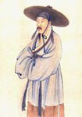
陆游
纳兰性德
辛弃疾
白居易
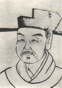
杨万里
李煜
范仲淹
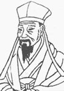
元好问
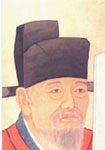
欧阳修
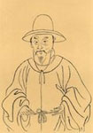
唐寅
王戎
方以智
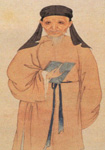
黄尊素
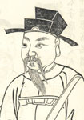
舒元舆
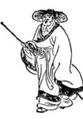
万俟咏
高凤翰
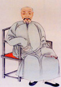
李绂
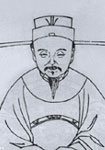
王应麟
嵇康
晁补之
蔡邕
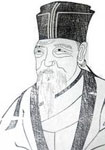
苏洵
冯梦龙
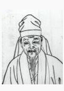
马致远
贯休
上官仪
李纲
诗人排行榜
[1]
唐代诗人
/
杜甫
[2]
唐代诗人
/
李白
[3]
宋代诗人
/
李清照
[4]
宋代诗人
/
苏轼
[5]
先秦诗人
/
孔子
[6]
宋代诗人
/
陆游
[7]
清代诗人
/
纳兰性德
[8]
宋代诗人
/
辛弃疾
[9]
唐代诗人
/
白居易
[10]
宋代诗人
/
杨万里
[11]
五代诗人
/
李煜
[12]
宋代诗人
/
范仲淹
[13]
金朝诗人
/
元好问
[14]
宋代诗人
/
欧阳修
[15]
明代诗人
/
唐寅
诗人推荐
[诗仙]
唐代诗人
/
李白
[诗圣]
唐代诗人
/
杜甫
[诗魔]
唐代诗人
/
白居易
[诗豪]
唐代诗人
/
刘禹锡
[词圣]
宋代诗人
/
苏轼
[诗狂]
唐代诗人
/
贺知章
[诗佛]
唐代诗人
/
王维
[诗囚]
唐代诗人
/
孟郊
[诗骨]
唐代诗人
/
陈子昂
[诗鬼]
唐代诗人
/
李贺
[诗杰]
唐代诗人
/
王勃
[诗虎]
唐代诗人
/
罗邺
[诗雄]
唐代诗人
/
岑参
[诗奴]
唐代诗人
/
贾岛
[杜紫薇]
唐代诗人
/
杜牧
[郑鹧鸪]
唐代诗人
/
郑谷
[崔鸳鸯]
唐代诗人
/
崔珏
[温八叉]
唐代诗人
/
温庭筠
[李三瘦]
宋代诗人
/
李清照
[五言长城]
唐代诗人
/
刘长卿
[诗家天子]
唐代诗人
/
王昌龄


 皖公网安备 34160202002390号
皖公网安备 34160202002390号